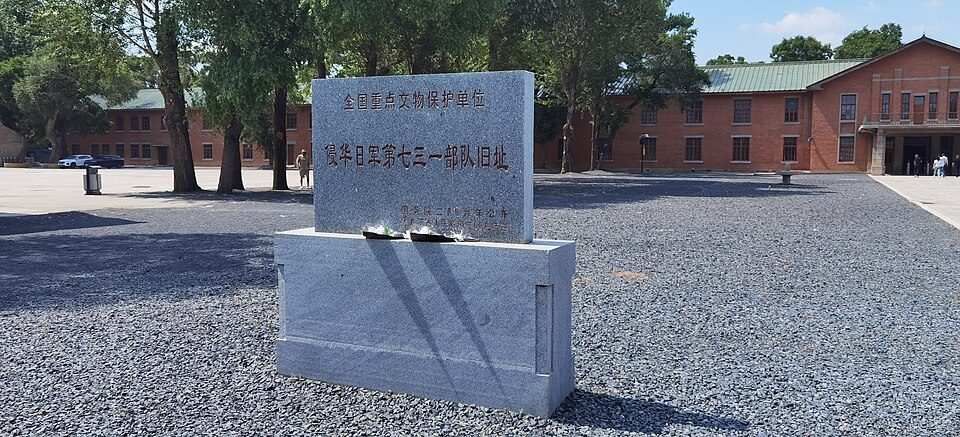

FILE UNIT/731 // 1930s–1945
Unit 731 and Japanese Human Experimentation
Unit 731 and related Japanese military units conducted lethal experiments and biological warfare in China. The core crimes are supported by convergent records; victim totals and postwar bargains are less precisely known.


CASE ANALYSIS
What the record supports
CLAIM AND BOUNDARY
Unit 731 and related Japanese military units conducted lethal human experiments and biological warfare research during the war in China. Historical, medical, and tribunal evidence supports the atrocities. Debates concern exact victim counts, command responsibility, and postwar U.S. bargains for data—not whether the crimes occurred.
CHRONOLOGY AND CONTEXT
Based in occupied Manchuria, Unit 731 operated laboratories and detention sites during the 1930s and World War II. Prisoners faced infectious disease, vivisection, frostbite, and other procedures; biological agents were tested in Chinese communities. After defeat, many perpetrators avoided prosecution and U.S. officials sought data from some specialists.
DOCUMENTARY EVIDENCE
Japanese records, survivor accounts, Soviet Khabarovsk trial documents, U.S. files, and medical scholarship converge on experimentation and biological attacks. Declassified records support postwar data exchanges and immunity arrangements. Independent sources corroborate core crimes, while details of individual incidents and numbers differ.
CONTRARY EVIDENCE AND ALTERNATIVES
Soviet trials had political purposes, leading some Western accounts to dismiss them. Later Japanese and U.S. documents corroborated central allegations. Exact victim counts are uncertain because records were destroyed and victims unidentified. This uncertainty should not minimize atrocities or create false precision.
UNCERTAINTY
Destroyed files and incomplete victim registers limit quantification. Individual participation and command responsibility need person-specific evidence. Postwar immunity was not uniform, and the extent of data transfer remains under study. Cover-up evidence does not make every later allegation about Japanese biological warfare true.
CALIBRATED ASSESSMENT
Human experimentation and biological warfare crimes by Unit 731 are established by multiple lines of evidence. Remaining uncertainty concerns scale, responsibility, and postwar bargains. A responsible account rejects denial and invented precision and separates the documented crimes from unsupported additions.
WHAT WOULD CHANGE THIS
New Japanese, U.S., or Russian archives, identified remains, and site archaeology could refine counts and command links. Authenticated orders and logs would strengthen individual attribution. Missing records cannot prove a particular victim count or person’s role.
DOCUMENT TRAIL
Sources & limitations
- U.S. National Archives intelligence recordsFinding aid identifies relevant postwar files; the archive is incomplete.
- Japan National Institute for Defense Studies researchJapanese archival scholarship analyzes the history; compare with victim and international records.
- PubMed literature catalogSearchable medical-history scholarship supports further review; individual articles differ in evidence and method.